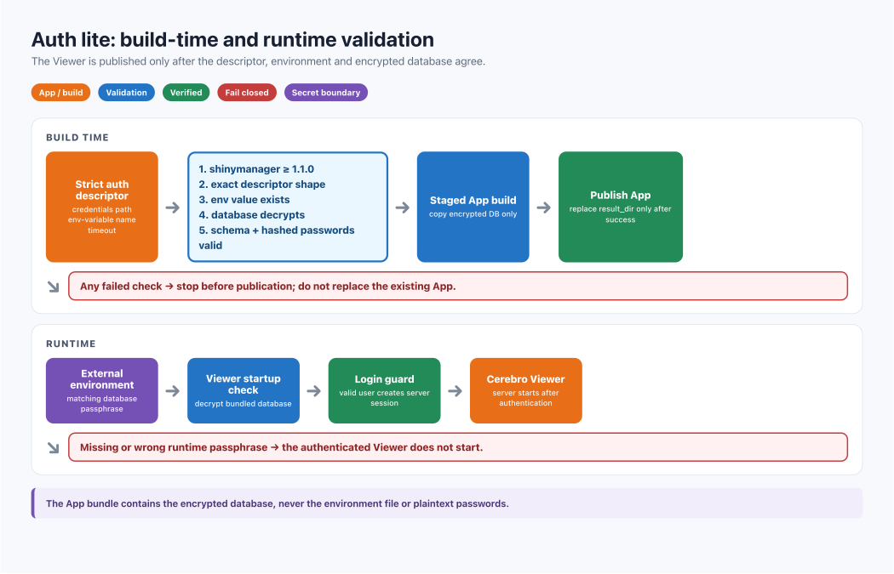

Control access to CerebroNexus with a login page
Roman Hillje
Xuesong Wang
30 August, 2026
Source:vignettes/control_access_to_cerebro_with_a_login_page.Rmd
control_access_to_cerebro_with_a_login_page.RmdOverview
createShinyApp() creates a public Viewer unless you pass
auth. Auth lite expects two existing inputs:
- an encrypted
shinymanagerdatabase; and - an environment variable containing that database’s passphrase.
The App receives the encrypted database. Passwords and the passphrase stay outside the App. HTTPS is still required.

One-minute setup
Run this as: the person preparing the Viewer release.
Run it on: one trusted machine with R, CerebroNexus, and the source CRB files.
What happens: you create one encrypted credentials database, one external secret file, and one login-protected App directory.
Verify: the final createShinyApp() call
must succeed before anything is deployed; then test one valid and one
invalid login locally.
Install the optional provider:
# R console — run this once to install and load the authentication tools.
install.packages("shinymanager")
library(CerebroNexus)Generate a database passphrase on a trusted machine:
Prepare the private and App directories first. Run this once as the
server operator; it makes the release account the owner so the
subsequent R commands can write under /srv without elevated
privileges:
# Terminal — run this once on the trusted build or deployment machine.
sudo install -d -m 0700 -o "$USER" -g "$(id -g)" /srv/cerebro/private
sudo install -d -m 0755 -o "$USER" -g "$(id -g)" /srv/cerebro/appsCreate the environment file outside the App directory:
# R console — run this to create the external env file with private permissions.
secret_file <- "/srv/cerebro/private/viewer-auth.env"
stopifnot(!file.exists(secret_file))
old_umask <- Sys.umask("077")
tryCatch(
{
stopifnot(file.create(secret_file))
writeLines(
"CEREBRO_AUTH_PASSPHRASE=replace-with-the-random-value",
secret_file
)
},
finally = Sys.umask(old_umask)
)
Sys.chmod(secret_file, "0600")Create the encrypted database:
# R console — run this to create the encrypted user database.
readRenviron(secret_file)
accounts <- data.frame(
user = c("alice", "bob"),
password = c("alice-login-password", "bob-login-password"),
admin = c(TRUE, FALSE),
stringsAsFactors = FALSE
)
shinymanager::create_db(
credentials_data = accounts,
sqlite_path = "/srv/cerebro/private/credentials.sqlite",
passphrase = Sys.getenv("CEREBRO_AUTH_PASSPHRASE")
)
rm(accounts)Build the protected Viewer:
# R console — run this to build the login-protected Viewer.
createShinyApp(
cerebro_data = c("My dataset" = "output/cerebro_my_dataset.crb"),
result_dir = "/srv/cerebro/apps/my_app",
port = 3838,
auth = list(
credentials = "/srv/cerebro/private/credentials.sqlite",
passphrase_env = "CEREBRO_AUTH_PASSPHRASE",
timeout_minutes = 15
)
)Start the Viewer and clear the process variable when finished:
# R console — run this to start the generated App locally.
readRenviron("/srv/cerebro/private/viewer-auth.env")
shiny::runApp("/srv/cerebro/apps/my_app")
Sys.unsetenv("CEREBRO_AUTH_PASSPHRASE")What goes where
| Item | Correct location | In the App? |
|---|---|---|
Source credentials.sqlite
|
Private build area | No; a copy is added |
viewer-auth.env |
Secret store or protected path | Never |
| Generated App | Deployment directory | Yes |
| Bundled encrypted database | private-data/auth/ |
Yes |
| Plaintext account table | Trusted R memory only | Never |
The runtime account needs only read access to the bundled database. The Viewer decrypts its hashed credentials into memory and does not use SQLite for runtime state. Login history, database-backed account locking, and in-App password changes are intentionally disabled. Update accounts or passwords in the private source database, then rebuild and redeploy the App.

Validation rules
The build stops before publication unless all checks pass:
The names(auth) must be exactly “credentials”, “passphrase_env”, and optionally “timeout_minutes”.
-
shinymanager >= 1.1.0is installed; -
authhas only supported fields; - the database is a readable regular SQLite file;
- the named environment variable exists and is at least 16 characters;
-
timeout_minutesis a whole number from 1 to 1440; and - the database decrypts and has the expected tables and hashed passwords.
A wrong passphrase never produces a half-configured App.
Run locally
Run this as: the account that will start the App.
Run it on: the machine holding the generated App and its matching external env file.
What happens: readRenviron() places the
passphrase in this R process; runApp() reads it to unlock
the bundled database and start the login page.
Verify: open http://localhost:3838, confirm a valid login succeeds and an invalid login fails, then stop the R process with Ctrl+C.
Every new R process must load the external secret:
# R console — run this in every local App process.
readRenviron("/srv/cerebro/private/viewer-auth.env")
shiny::runApp("/srv/cerebro/apps/my_app")Check one valid and one invalid login in a private browser window. Repeat the check on the real HTTPS URL.
Deploy with Shiny Server and systemd
Run this as: the server operator; use elevated privileges only for file and service administration.
Run it on: the Shiny Server host, not on the build workstation.
What happens: the App is installed under the Shiny Server tree, while systemd reads the separate env file before starting the service.
Verify: inspect service status and logs, then open the real HTTPS App URL and test valid and invalid login.
Publish the App and secret separately:
# Terminal — run these commands on the Shiny Server host.
sudo cp -R /srv/cerebro/apps/my_app /srv/shiny-server/
sudo chown -R shiny:shiny /srv/shiny-server/my_app/private-data/auth
sudo chmod 0500 /srv/shiny-server/my_app/private-data/auth
sudo chmod 0400 /srv/shiny-server/my_app/private-data/auth/credentials.sqlite
# Install the external secret at the exact path used by the systemd override.
sudo install -d -m 0750 /etc/cerebronexus
sudo install -m 0600 /srv/cerebro/private/viewer-auth.env /etc/cerebronexus/my_app.env
sudo chown root:root /etc/cerebronexus/my_app.envLoad the secret through a reviewed systemd override:
# systemd override — save this in the editor opened by `sudo systemctl edit shiny-server`.
[Service]
EnvironmentFile=/etc/cerebronexus/my_app.envDeploy with Docker Compose
Run this as: a user allowed to run Docker.
Run it on: the host that contains
my-deployment/ and the external env file.
What happens: Docker Compose reads
compose.yaml, builds a runtime containing CerebroNexus and
shinymanager, injects the env-file assignments into the
container, and maps host port 3838 to the App.
Verify: open http://localhost:3838, test valid and invalid login, and
check docker compose logs -f cerebro for startup
errors.
You need Docker Engine with Docker Compose. Put these files in one deployment directory:
my-deployment/
├── Dockerfile
├── compose.yaml
└── my_app/The Dockerfile packages the App, not the secret:
# Dockerfile — save this as `my-deployment/Dockerfile`.
FROM rocker/shiny:latest
RUN R -q -e 'install.packages(c("remotes", "shinymanager")); remotes::install_github("mihem/CerebroNexus", dependencies=TRUE)'
COPY my_app /srv/shiny-server/my_app
RUN chown -R shiny:shiny /srv/shiny-server/my_app
USER shiny
CMD ["R", "-q", "-e", "shiny::runApp('/srv/shiny-server/my_app', host='0.0.0.0', port=3838)"]Save the following as compose.yaml beside the
Dockerfile:
# compose.yaml — save this as `my-deployment/compose.yaml` beside Dockerfile.
services:
cerebro:
build: .
env_file:
- /absolute/private/viewer-auth.env
ports:
- "127.0.0.1:3838:3838"env_file is an absolute path on the host that runs
Docker Compose. The file stays outside my-deployment/;
Compose reads it and passes the assignment into the container
environment without copying the file into the image. The port is bound
only to loopback: place a TLS-terminating reverse proxy in front of it
before exposing the Viewer to other machines.
Start the service from the deployment directory:
# Terminal — run these commands from the deployment host.
cd /path/to/my-deployment
docker compose up --buildOpen http://localhost:3838. To run in the background, add
-d:
Inspect the App logs or stop the service with:
# Terminal — run these commands from `my-deployment/` to inspect or stop it.
docker compose logs -f cerebro
# Stop and remove the Compose containers and network.
docker compose downKeep viewer-auth.env outside the build context, restrict
its host permissions, and add a defensive .dockerignore
rule.
Run on another machine
Run this as: the operator of the destination host.
Run it on: the new machine after the App and env file arrive through separate encrypted transfer paths.
What happens: the destination R process receives the same variable name and value used when the App database was built.
Verify: test the destination URL before retiring or changing the old release.
Transfer the App and secret through separate encrypted channels, then:
# R console — run this on the destination host to start the copied App.
readRenviron("/protected/path/viewer-auth.env")
shiny::runApp("/srv/cerebronexus/my_app")Validate login before retiring the old deployment.
Limit failed sign-ins
Run this as: the reverse-proxy administrator.
Run it on: the reverse proxy in front of the Viewer.
What happens: the proxy limits repeated authentication requests by source before they reach Shiny.
Verify: exceed the configured request limit from a test client and confirm that the proxy rejects further attempts temporarily.
Configure source-aware rate limiting at the reverse proxy. The read-only Viewer does not persist failed-login counters or account locks.
Add, remove, or rotate users
Run this as: the credential administrator on the trusted build host.
Run it on: the private source-database area, never inside a deployed App.
What happens: a new database and App release are created; the running App is not updated merely because the old source database changed.
Verify: deploy the new App and matching secret together, test both login outcomes, and keep the old pair only for the approved rollback window.
Create a new source database, rebuild the App, and deploy the new App with its matching secret. Keep the old pair only for the approved rollback window.
Troubleshooting
| Symptom | Action |
|---|---|
| No login page | Rebuild with auth; confirm the new App was
deployed |
| Missing environment variable | Compare passphrase_env with the env-file name |
| Database cannot decrypt | Load the secret paired with that database |
| Deployed App stops | Inspect the service environment, not your shell |
| Database is not accessible | Give the runtime account read and directory traversal access |
| Docker rebuild loses auth | Inject the external file at runtime |